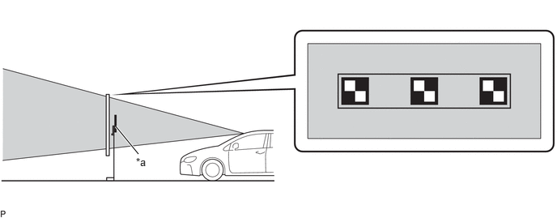
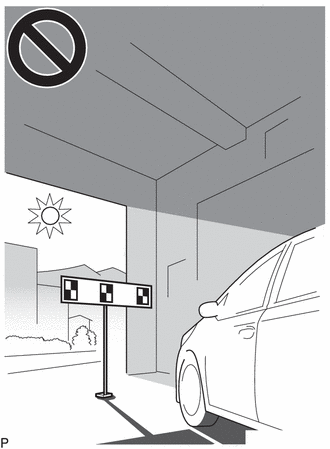
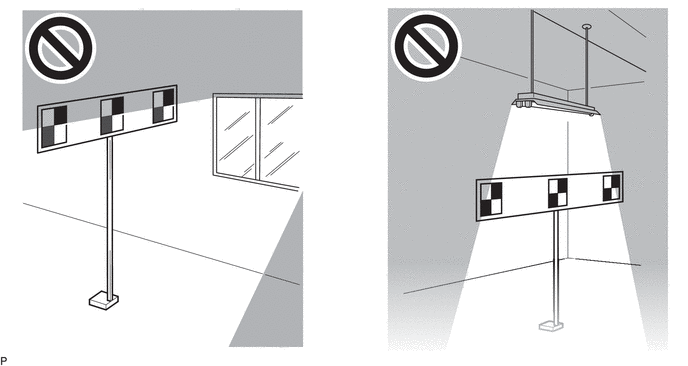
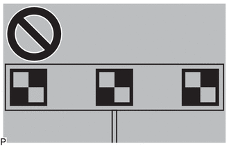
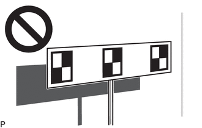
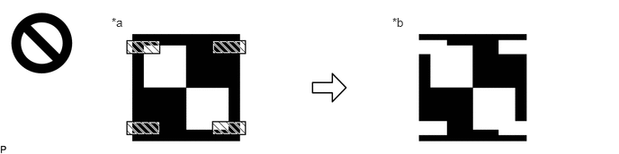
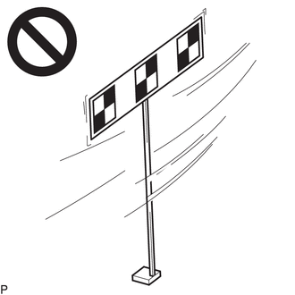
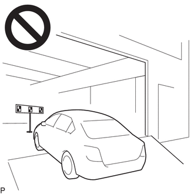

| Last Modified: 10-07-2025 | 6.11:8.1.0 | Doc ID: RM100000002H6RS |
| Model Year Start: 2024 | Model: Tacoma | Prod Date Range: [12/2023 - ] |
| Title: ADVANCED DRIVER ASSISTANCE SYSTEM: FRONT CAMERA: BEFORE STARTING TARGET ADJUSTMENT; 2024 - 2026 MY Tacoma Tacoma HV [12/2023 - ] | ||
BEFORE STARTING TARGET ADJUSTMENT
CAUTION / NOTICE / HINT
NOTICE:
When replacing the windshield glass of a vehicle equipped with a forward recognition camera, make sure to use a Toyota genuine part. If a non-Toyota genuine part is used, the forward recognition camera may not be able to be installed due to a missing bracket. Also, the front camera system, automatic high beam system or traffic jam assist system may not operate properly due to a difference in the transmissivity or black ceramic border.
HINT:
- Purpose of Forward Recognition Camera Optical
Axis Learning
- If the installation position or orientation of the forward recognition camera is changed due to it being replaced with a new one or the windshield glass sub-assembly being replaced or removed and installed, it is necessary to perform forward recognition camera optical axis learning for the forward recognition camera to learn the driving direction of the vehicle and its horizontal axis in order for each driving support system to operate correctly.
- Characteristics of Forward Recognition Camera
- As the forward recognition camera
recognizes targets using image processing based
on differences in contrast, when performing
forward recognition camera optical axis
learning, if there are overhead lights,
windows, reflective objects, or high contrast
objects behind the target, the contrast between
background objects may be detected as high and
may be misrecognized as a target.

- By blocking objects behind the target which
may be misrecognized as a target, the forward
recognition camera can more easily recognize
the target and complete forward recognition
camera optical axis learning. 
*a
Target
-
-

Target Recognition Area
-
-
- Forward recognition camera optical axis
learning may fail if it is performed under any
of the following conditions.
- Light Shining from Behind Target
(Backlit)
As the target will appear dark to the camera if the target is backlit, the contrast of the black and white parts of the target will decrease and the target may not be recognized.
 - Target Partially Illuminated by Light
from Windows
If the surface of the target is unevenly illuminated, the contrast of the black and white parts of the target will decrease and the target may not be recognized.
 - Entire Target not Illuminated
If the target is placed in an area that is dark, the contrast between the target and the background will decrease and the target may not be recognized.
 - Shadow of Target is Cast onto Wall
Make sure that the shadow of the target is not cast onto a wall as this may cause a target recognition error.
 - Reflective Object on Target Surface
If an object, such as clear adhesive tape, is attached to the target surface or if the target is laminated, the target surface will reflect light. As the reflected light will appear white to the camera, the target may not be recognized.
*a
Actual Target
*b
Target as Seen by Forward Recognition Camera

Reflective Object or Surface
-
-
- Border of Black and White Parts of
Target are Blurry or Distorted
If the borders of the black and white parts of the target appear blurry to the camera, the detected contrast will be low and the target may not be recognized.
- Target is Moving
If the target is moving, due to being blown by the wind, etc., it may not be recognized.
 - Target and Vehicle are not Level
If the target and vehicle are not level when learning is performed, an incorrect center of the direction of travel of the vehicle may be learned or the forward recognition camera may not be able to detect the target.

- Light Shining from Behind Target
(Backlit)
- As the forward recognition camera
recognizes targets using image processing based
on differences in contrast, when performing
forward recognition camera optical axis
learning, if there are overhead lights,
windows, reflective objects, or high contrast
objects behind the target, the contrast between
background objects may be detected as high and
may be misrecognized as a target.